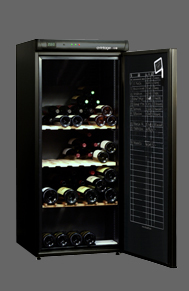
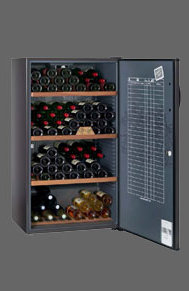

| AV175 | Pratique, le thermomètre en façade et le nouveau registre de cave International pour tenir à la craie la gestion des bouteilles présentes. Confortable les clayettes collector réversibles à empreintes en bois massif. | |||
|  | Contenance | Système froid | Dimensions (hxlxp) | Porte |
| 178(en 75cl) | Compresseur | 144x62x67 | Pleine | |
| Accessoires : 2 Clayettes réversibles et 1 Modukable (en option payante). Régulation électromécanique, Afficheur Digital de température | Noir | |||
| AV205 | Astucieux, sa lampe de lecture pour lire les etiquettes dans un environnement obscur. | |||
 |
Contenance | Système froid | Dimensions (hxlxp) | Porte |
| 196 (en 75cl) | Compresseur | 139 x 70 x 68 | Pleine | |
| Accessoires : Serrure à clé, 1 Clayette coulissante (possibilité de supplémentaires en option payante), Régulation électronique, Dynamique DataDisplay | Noir | |||
| CV183 | Elégante, la poignée de porte en bois profilé. | |||
|  | Contenance | Système froid | Dimensions (hxlxp) | Porte |
| 170 (en75cl) | Compresseur | 152 x 70 x 67 | Pleine | |
| Accessoires : Seccure à clé, Clayettes bois | Brun foncé | |||